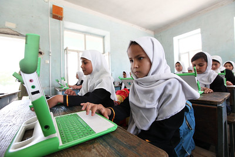

One Laptop per Child
One Laptop per Child is a nonprofit organization that aims to create educational opportunities for the worlds poorest children. To accomplish this, they have designed a laptop called the XO, capable of working in tough conditions and remote areas. The XO comes with many multi-language software and activities to allow children to learn and share with each other. The organizations' mission is to provide these laptops to cultivate an interest in technology and its use a tool for learning.

5 Core Principles
One Laptop per Child's mission revolves around these 5 Core Principles:
- Kids get to take the Laptops home
- Focus on Early Education
- Every child recieves a laptop
- Connectivity
- Free and Open Source Software
This allows access to information for the child and the family at any time
To develop a love for learning at an early age and motivate children to study
Allows for individual access to knowledge and a sense of ownership
For interaction with information beyond a childs borders
Children can explore programs and design software at their own pace
These 5 Core Principles help focus the organizations efforts in a way that is most impactful to the purpose of the mission. One laptop per Child makes this powerful educational tool available to children all over the world who otherwise do not have the resources for acquiring a laptop. By having a laptop, they have access to a wealth of information and educational activities that they can share with each other through the XO's networking system.
If you would like to learn more about One Laptop per Child, please visit the FAQ section of the page. On the FAQ section, you can find information about why OLPC thinks it is important to provide laptops, and other frequently asked questions. If you would like to support the organization, you can donate by visiting the Donate section of the page. Your contribution helps bring education to children all over the world.